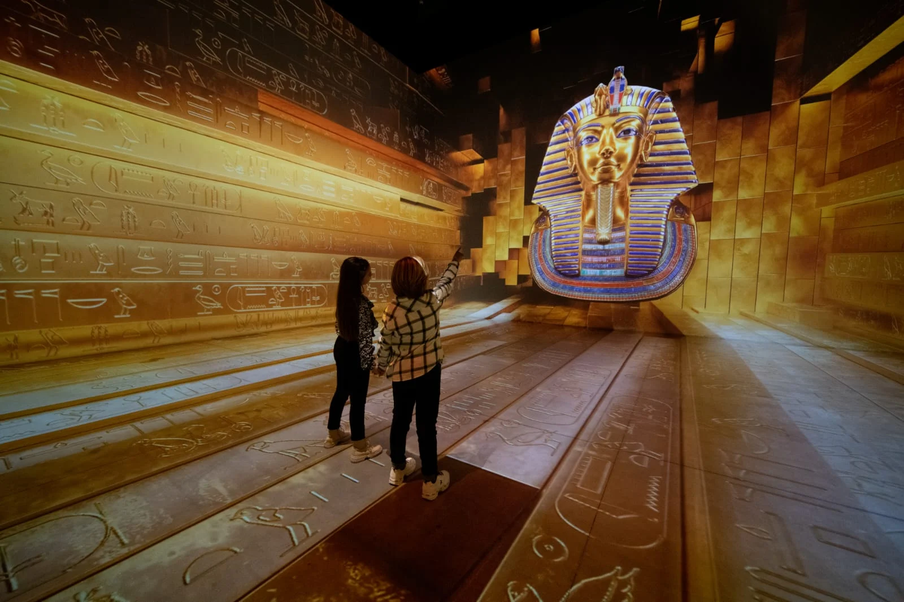

Tutankhamun - The Immersive Exhibition: A Mesmerizing Journey through Ancient Egypt
The Grand Egyptian Museum (GEM) will host ‘Tutankhamun – The Immersive Exhibition’ in partnership with Madrid Artes Digitales on May 21.
The exhibition marks the 101-year anniversary of the discovery of the boy pharaoh tomb.
Tutankhamun (1341-1323 BC) was the antepenultimate pharaoh of the 18th Dynasty of ancient Egypt. His tomb was discovered in 1922 by a team led by British Egyptologist Howard Carter.
His 5,000 artefacts will be displayed together for the first time at the GEM, of which the opening date is yet to be officially announced, but it is partially open for such events.
Visitors will see the splendour of Tutankhamun’s reign through state-of-the-art digital projections.


Comments
Leave Us a Comment
excting